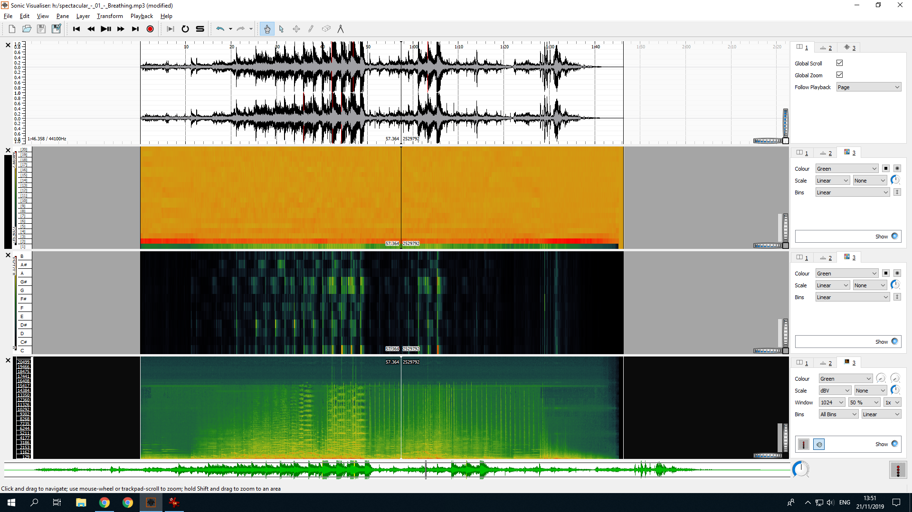
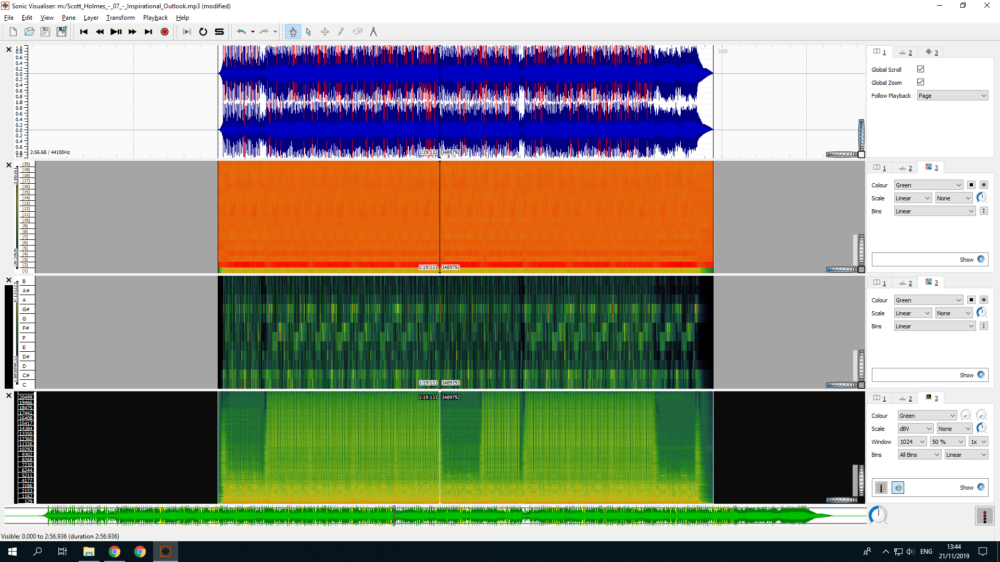
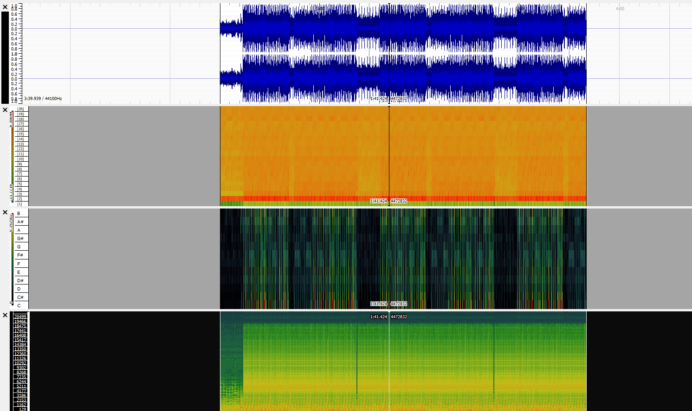
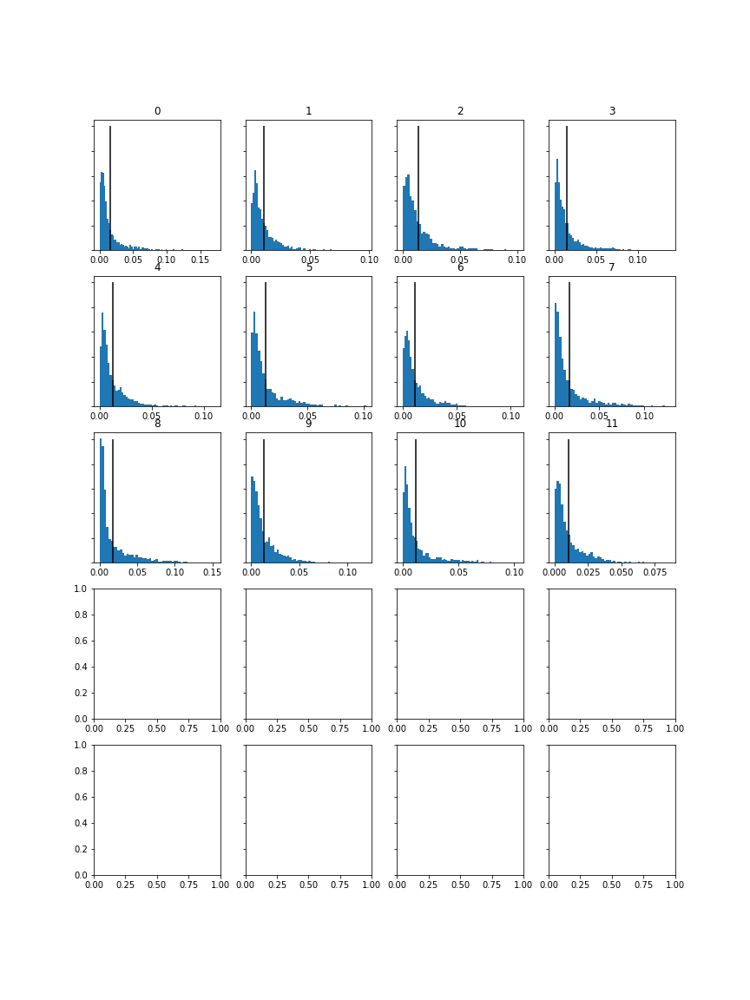
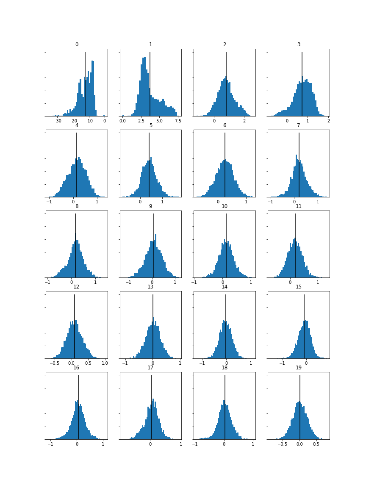
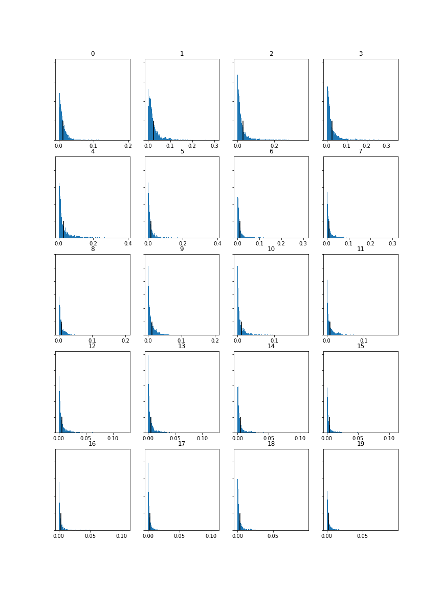
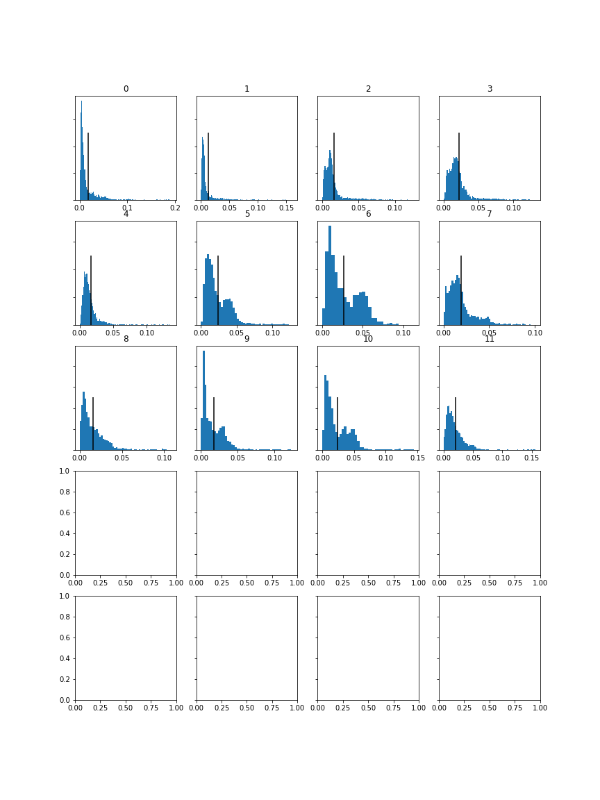
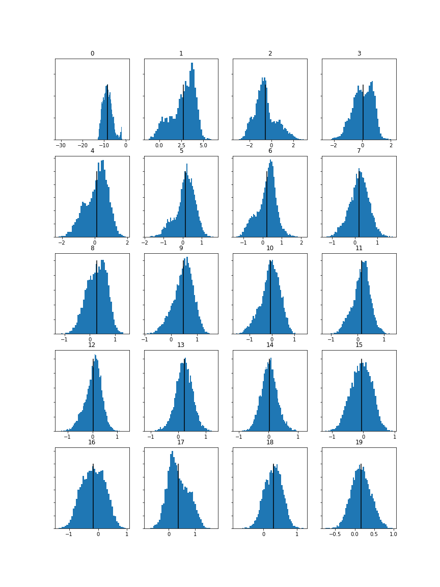
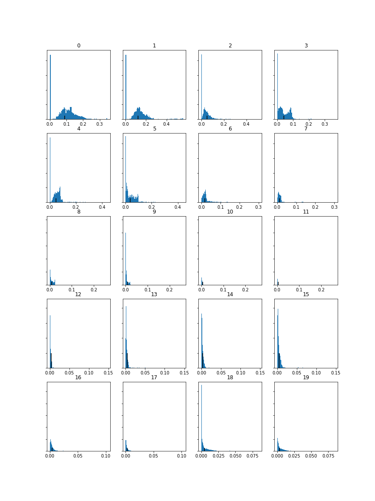

Track 1: Breathing, by Spectacular Sound Productions

Track 2: Inspirational Outlook, by Scott Holmes

Track 3: Frontline, by Yung Kartz
Chromagram  Mel Frequency  Spectogram 
Chromagram  Mel Frequency  Spectogram 
Mel Frequency Feature: